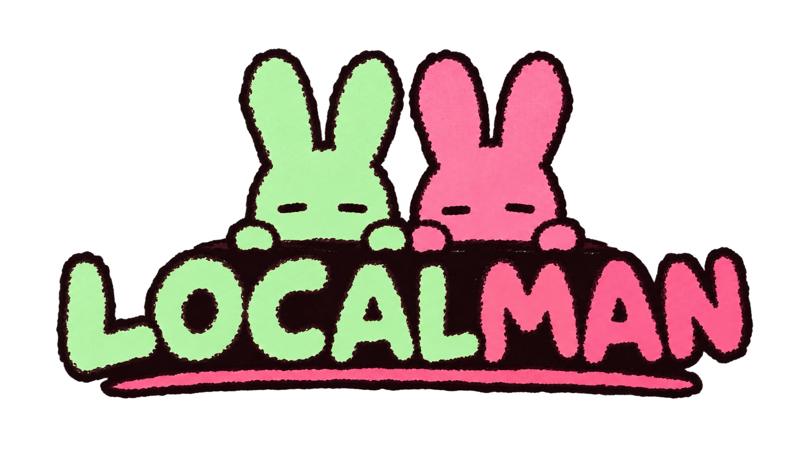

File management
Edit CSV and TXT localisation files, and inspect read-only CLD files. Save changes to an opened editable file when available, or export a separate copy; sections can also be exported individually.

Load a file to view map distribution.
Load a file to view source tag distribution.
Load a file to view section progress.
| Translated | |||
|---|---|---|---|
| Load a file to view progress. | |||
Unique words: — Total word occurrences: —
Load a file to view target-language word usage.
Import a localisation CSV to view its entries.
Load a file to begin.
Review changed fields, extra entries in the current file, and entries missing from the current file. Entries are matched by section and ID.
Open a current localisation file to begin comparing.
Review validation issues by map, track resolved items and move directly to the affected entry.
Select a map to view its details.
Game map
| ID | Source | Original | Translation |
|---|
Select a term to view its translation and map usage.
Translated term
| Map | Occurrences |
|---|
| Map | Occurrences |
|---|
Settings are stored in this browser.
Settings are saved automatically in this browser when changed.
LOCALMAN is a browser-based localisation manager for The Coffin of Andy and Leyley, created by @6dot9 for the Comunidad Hispana de TCOAAL translation project.
Edit CSV and TXT localisation files, and inspect read-only CLD files. Save changes to an opened editable file when available, or export a separate copy; sections can also be exported individually.
Compare the current file with a target file. Changed fields are highlighted side by side, with extra and missing entries identified by section and ID.
Review spelling, sentence-length and glossary issues by map, track resolved items, and exchange issue records as JSON.
Review translation statistics, section progress, map complexity, Source-tag usage and target-language word frequency.
Search and filter the game's maps by episode and route, with descriptions and confidence notes.
Search and filter entries, find and replace editable text, use translation suggestions, and review spelling or glossary issues.
Search glossary terms, inspect translations and descriptions, and navigate to related map occurrences.
Configure dictionaries, exclusions, validation and table density. Randomise Source-tag colours and import or export settings as JSON.
Version —
Release date
Select this tab to load version information.
| Game | Format | Supported versions | Mode |
|---|
python launch.py from the LOCALMAN project folder.http://127.0.0.1:8000) in your browser and leave the server running while you work.The local server does not require an internet connection. Once the app has loaded, its cached files can also be opened offline in the same browser.